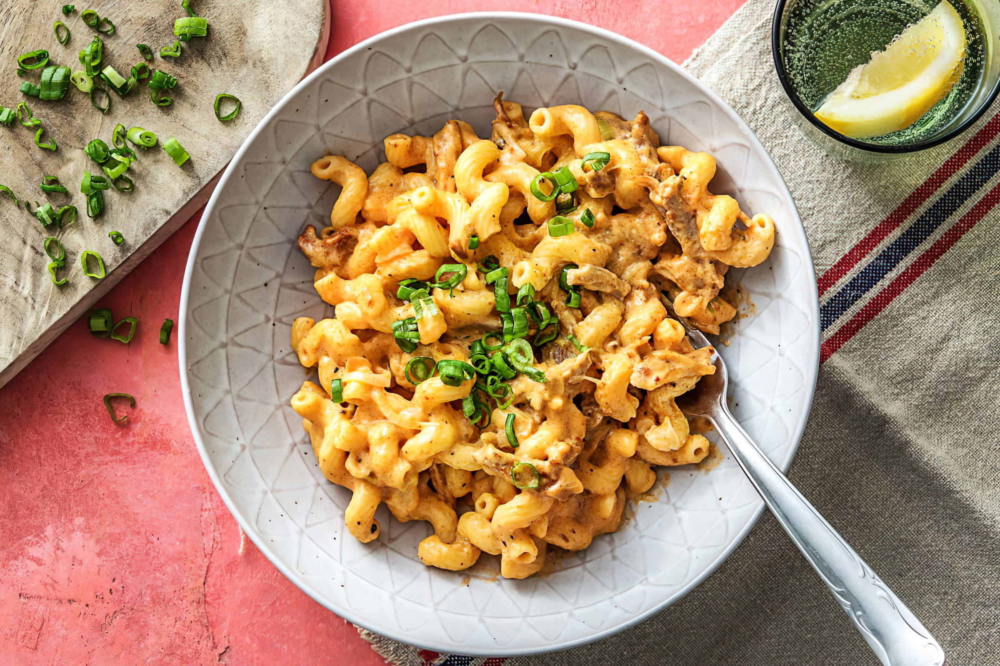

Mac'n Cheese
Cooking Time: 25-35min
Pasta

This creamy baked mac and cheese is just what your carb-loving soul needs. Drown macaroni in a rich, creamy cheese sauce, crown with breadcrumb topping, and bake to perfection. Yes, please!
Ingredients
For the toppings
- 2 tablespoons melted unsalted butter
- 2/3 cup plain panko breadcrumbs
- 1/4 cup shredded Parmesan
- 1/4 teaspoon kosher salt
- 1/8 teaspoon smoked paprika
- Pinch cayenne pepper
For the macaroni
- 10 ounces elbow macaroni pasta or cavatappi
- 1 tablespoon kosher salt
- 1 tablespoon unsalted butter
For the sauce
- 4 ounces cream cheese
- 1 (10-ounce) brick cheddar cheese, shredded
- 2 1/2 cups whole milk
- 1/2 teaspoon white pepper
- 1/2 teaspoon kosher salt
- 1/2 teaspoon mustard powder
- 1/4 teaspoon turmeric powder
Garnish
- Minced parsley or chives
Method
- Preheat the oven to 350°F. Butter an 8 x 8 pan and set aside.
- In a small bowl, melt 2 tablespoons of butter. Add panko, Parmesan, salt, smoked paprika, and cayenne pepper. Set aside.
- Bring a pot of water to a boil over medium high heat. Add the macaroni and salt. Cook until the pasta is firm-tender, or al dente. Usually, this takes about a minute or two less than the cook time recommended on the box.
- Drain the pasta into a colander. Add 1 tablespoon butter to the same pot you boiled the pasta in. Add the drained pasta back to the pan and stir to coat. Remove from heat. You’ll get back to it later.
- In a large, high sided skillet set over medium heat, add the cream cheese, 1 cup of milk, and all of the spices. Break apart and smash the cream cheese with a spatula as it begins to soften and melt. Once the cream cheese is in pieces the size of a nickel or smaller, whisk the mixture until it’s homogeneous and thickened, about 4 to 5 minutes.
- Whisk the remaining 1 1/2 cups of milk into the sauce. Add the cheddar cheese one cup at a time, whisking continuously. Make sure each cup is incorporated before adding the next.
- Once the sauce is thick like heavy whipping cream and homogeneous, add the pasta. Stir to coat. It will look soupy. That’s what you want. Transfer the mixture to the buttered 8x8 pan. Smooth the top.
- Sprinkle the panko mixture over the top of the mac and cheese. Place in oven for 20 to 25 minutes until the top is golden brown and the cheese sauce is bubbling around the edges. Cool briefly before serving.